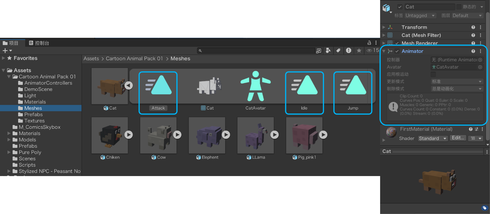
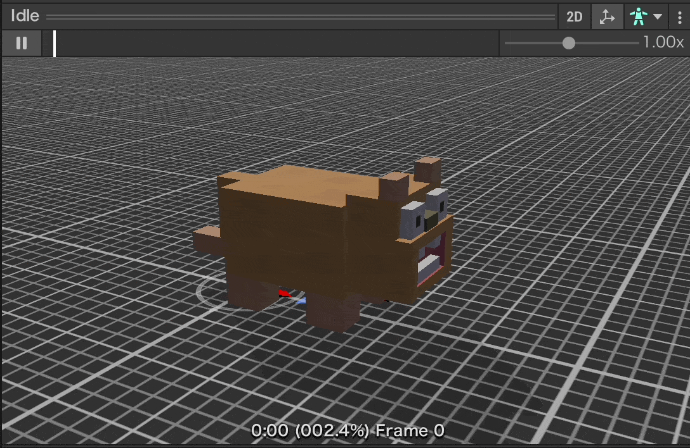
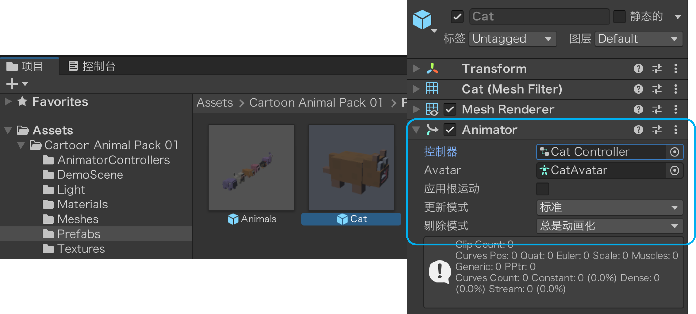
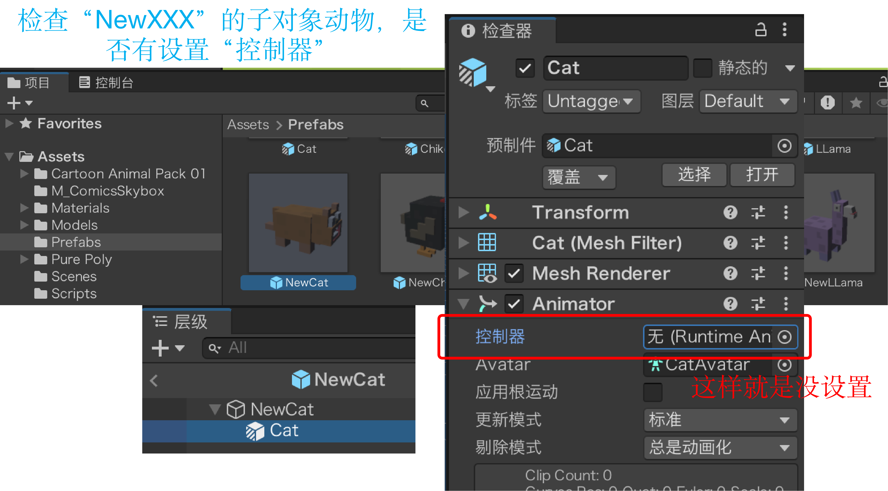
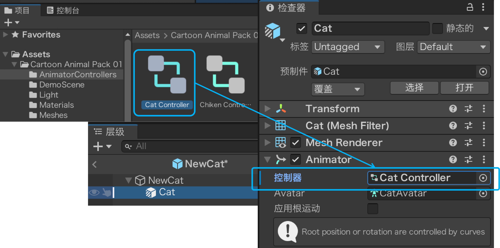
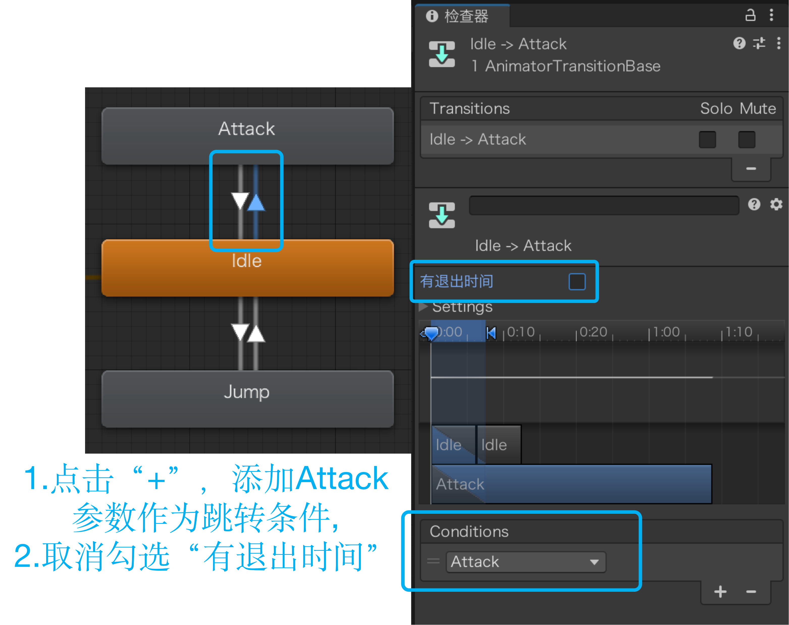
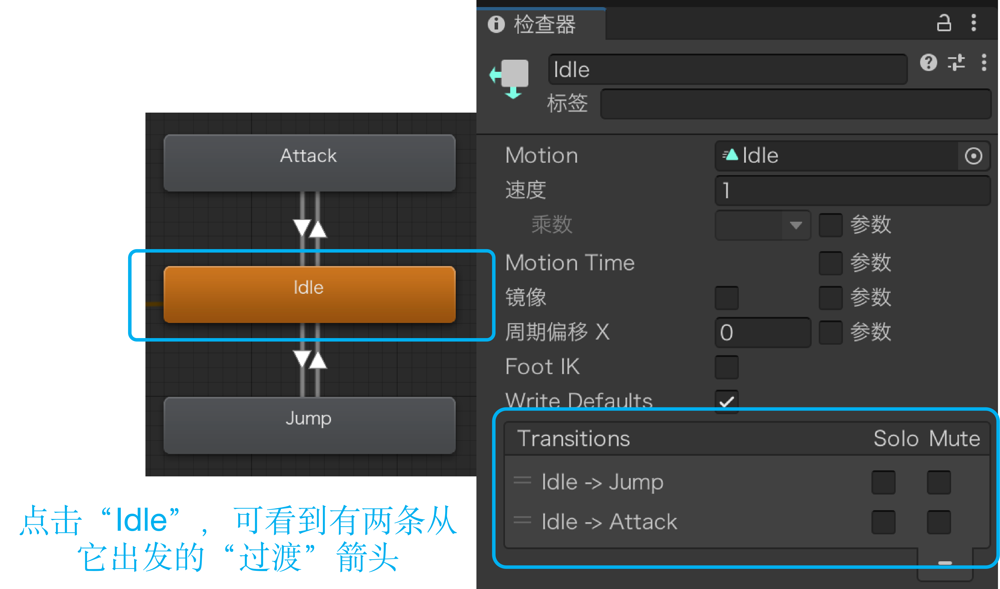

动物交互动画切换
三段动画 · 待机、跳跃、攻击
三段动作，模型自带
Cartoon Animal Pack 01 里的每只动物，身上都挂着 Animator（动画器） 组件，里面管着三段做好的动作。
这三段不是我们做的——打开 Cartoon Animal Pack 01/Meshes/ 里任意一只动物的 fbx，把它展开、或者看检查器（Inspector）的动画（Animation）页签，三段片段都列在里面，跟着模型一起带过来的。

三段各管什么

站着不动：这段里没有任何小动作，就是一直保持同一个姿势。

整个身子腾空一下，再落回地面。

往前扑一下，再退回原处。
| 状态 | 什么时候播 | 播完怎么办 |
|---|---|---|
| 待机（Idle） | 默认状态，闲着就播 | 循环播放，画面不动 |
| 跳跃（Jump） | 被叫住、要动一下的时候 | 播一遍，自己回待机 |
| 攻击（Attack） | 玩家贴得太近的时候 | 播一遍，自己回待机 |
还有一件事要记住：三段里没有「走路」——动物包里没做这个动作，动物移动时只能「滑」过去，这件事本课最后再处理。
动画控制器（Animator Controller）
先认识这个文件
组件里那个槽位指向的，就是这个 .controller 文件——一张「谁、什么时候、切成谁」的图。它本身不装动作（动作存在另外几个片段里），只管切换。
资源包交到我们手上的其实是半成品：三段动作都摆上桌了，切换一条也没连。打开就能看出来。
怎么把这张图打开
- 选中动物预制体，检查器里找到 Animator 组件

- 点组件里的控制器（Controller）槽位——项目窗口会跳到那个
.controller文件，并把它高亮
- 对着高亮的那一项双击（或按
Enter回车），才会弹出 Animator 窗口
⚠️ 单击只是选中，双击才打开。只点一下，屏幕上不会多出任何窗口——卡在这一步很常见，不是没生效，是还差一下。
也可以跳过组件，直接在项目窗口里找到这个 .controller 文件双击，打开的是同一个窗口。
回头确认：包过壳的预制体，控制器槽位还在吗
前面说的是资源包原本的样子：模型自带动画，控制器也挂好了。但我们自己的预制体动过手脚，所以先回头确认一遍：选中动物，检查器里找到 Animator，看「控制器（Controller）」这一栏。

显示 Cat Controller 就对了；显示 None (Runtime Animator Controller) 就是空槽——这种情况下动画一条都不会播，连原地待机都不动，后面怎么点都打不开控制器窗口。
为什么会空：前面为了让动物贴地、把中心点挪到脚下，在模型外面套了一层空壳（NewCat），模型连同它的动画组件都成了子物体。换父级、重新拖一次模型、从别的工程拷过来，这个槽位都很容易丢——而丢了不会报错，只是「动物站着不动」，最难查。
- 把项目窗口里的 Cat Controller 直接拖到这一栏（松手就挂上）；也可以点栏位右边的 ◎ 圆点，在弹出列表里选
Cat Controller
- 挂上后这一栏就变成 Cat Controller（不再是
None）——回到场景里看，动物动起来就说明通了。这时它默认一直播「跳跃」是正常的，后面把默认状态改成待机就好
六只动物都要挂，而且各挂各的：NewCat→Cat Controller、NewChiken→Chiken Controller、NewCow→Cow Controller、NewElephent→Elephent Controller、NewLLama→LLama Controller、NewPig→Pig_pink1 Controller。别图省事全拖 Cat Controller——每个控制器里的动作都是配着自己那副骨架做的，挂错容易出现姿势错乱、动作对不上。
加参数 · 给动作装上开关
加两个触发器参数
点「参数（Parameters）」面板右上角的 +，菜单里有四项：Float / Int / Bool / Trigger。这里必须选最下面的 Trigger，别选成 Bool——两者长得像，但关的方式不一样，下一张卡讲。
- 点
+→ 选 触发器（Trigger） → 命名Jump - 再加一个，命名
Attack

为什么选触发器，不选布尔
两种都能「打开」，差别在谁来关：Bool 打开后一直开着，得有人把它关掉；Trigger 被过渡用掉就自动关，不用管。
- 播完之后：Bool 还停在 true，第二次按 F 什么也不会发生（值没变，等于没按），必须在代码里补一句设回 false；Trigger 不用管。
- 条件一直成立：Bool 会让状态被反复重新进入，动画卡在第一帧或来回闪；Trigger 进一次就清零，不会重复。
- 反过来要当心：像「按住右键一直瞄准」这种需要保持的，就必须用 Bool——Trigger 自动清零，保持不住。
这一课的跳跃、攻击都是按一下播一次，所以两个参数都选 Trigger。
连过渡 · 连上四条箭头
先把三段动作连起来（控制器里那零条线，就是这里补）
每个动作都要成对连：去一条、回一条，缺回程就卡在那儿出不来。这一课两个动作，所以是 2 + 2 = 4 条。
- 先把默认状态改成待机：右键「Idle」→ 设为默认状态（Set as Layer Default State），橙色框会移到 Idle 上。不改的话，一进游戏动物就在跳

- 待机 ⇄ 跳跃，是一对来回，一共两条。先连去程：右键「Idle」→ 选「创建过渡（Make Transition）」→ 鼠标上会拖着一条线，再点一下「Jump」 → 得到 待机 → 跳跃

- 再连回程：右键「Jump」→ 创建过渡 → 点「Idle」→ 得到 跳跃 → 待机。两条缺一不可——只连去程，动物跳一下就永远卡在「跳跃」里回不来

- 攻击同样是一对来回：右键 Idle → 创建过渡 → 点 Attack；再右键 Attack → 创建过渡 → 点 Idle

- 数一数，你自己连的应该是 4 条：待机 ⇄ 跳跃 2 条、待机 ⇄ 攻击 2 条。另外 Entry 指向默认状态的那条是 Unity 自动画的，不用管；Any State 是个空节点，默认一条箭头都没有，这一课也不用连它

⚠️ 点了「创建过渡」以后，鼠标上会拖着一条线，必须再点一下目标那块才算连上——只点了自己、或者按着左键乱拖完就松手，都不会生成箭头。
连错了怎么办：先在窗口里点一下那条箭头（选中的会变亮），检查器（Inspector）里就换成这条过渡的面板——在它的「过渡（Transitions）」列表下面点 −，这条箭头就删掉了。删掉重连，比对着参数硬修快得多。
设条件 · 什么时候才能切
再给箭头加条件
四条箭头已经连好了，但它们现在还没有任何条件——条件栏空着、又勾着退出时间，待机动画一播到头，就自己往跳跃/攻击跑过去了。这一步是给每条箭头定规矩：什么情况才准过；箭头本身不用再新建。注意只有出去的两条要动手，回来的两条保持默认、一处都不用改。
- 点「待机 → 跳跃」那条箭头，在检查器的「条件（Conditions）」里点
+，选上Jump
- 把这条过渡的「有退出时间（Has Exit Time）」取消勾选——不取消，得等当前动画播到某个时间点才肯切

- 「跳跃 → 待机」是回来的那条——这一步什么都不用改：新建的过渡默认就是「条件为空、有退出时间打勾」，连过渡那页连好就行了。不放心就点开看一眼，确认这两处没被动过；动画播到末尾，它自己就把状态送回待机

- 「攻击」那两条分开看：待机 → 攻击 和跳跃去程一样，加条件
Attack并取消退出时间；攻击 → 待机 和跳跃回程一样，一处都不用动
状态机不会自己「回家」：进了「跳跃」就停在「跳跃」，动画播完也只是停在最后一帧，Unity 不会自动把你送回待机——所以「跳跃 → 待机」「攻击 → 待机」这两条必须亲手连，它们就是「回去」的路。
一句话记住方向：「出去」的箭头要条件、要立刻（要改）；「回来」的箭头不要条件、要等播完（默认就长这样，不用动）。
数不清连了几条时，点一下某个方块，检查器里的「过渡（Transitions）」列表会列出所有从它出发的箭头——待机应有 2 条（→跳跃、→攻击）、跳跃 1 条（→待机）、攻击 1 条（→待机），对得上就齐了。

列表左边那两个 Solo / Mute 勾选框先别动，它们是调试用的：Mute 让这条箭头失效，Solo 只放这一条、其它自动静音；勾了会存进资源里，忘了取消，动画就死活不切换。窗口里箭头变成红色（Mute）或绿色（Solo），就是被勾上了。
用代码触发动画 · SetTrigger
新建 AnimalAnim.cs
参数是「开关」，总得有人去按。写一个脚本挂在动物预制体上，把两个动作各包成一个方法。

// AnimalAnim.cs —— 新建脚本：专管播动画，挂在动物的「壳」上
// 整段都是新的：新建 C# 文件贴进去，然后挂到动物身上
using UnityEngine;
public class AnimalAnim : MonoBehaviour
{
private Animator animator;
void Start()
{
animator = GetComponentInChildren<Animator>(); // 自己身上没有，往子物体里找
}
public void PlayJump()
{
animator.SetTrigger("Jump"); // 被召唤时跳一下
}
public void PlayAttack()
{
animator.SetTrigger("Attack"); // 玩家贴太近时攻击
}
}GetComponentInChildren<Animator>()，不是 GetComponent<Animator>()？因为课件16 调整过中心点：动物的枢轴点不在身上，走起来会偏，当时给每只动物套了一个空壳——枢轴挪到壳上，模型整体偏一点当子物体（
(-0.3, 0, 0.2)）。所以现在是两层结构：└─ Cat（模型） ← 动画器（Animator）挂在模型上
GetComponent 只在自己身上找——壳上没有动画器，拿到的是 null，第一次 SetTrigger 就报空引用；GetComponentInChildren 会连子物体一起找，才摸得到模型上那个动画器。这个写法课件13 用过（摄像机跟随：相机是 Player 的子物体，只能用
GetComponentInChildren 取到）。只要脚本挂在父物体、组件在子物体，就得用 InChildren。代码讲解
- 挂在壳上，不挂在模型上：和
AnimalRoam、AnimalFollow一样，脚本都挂在预制体根节点那个壳上；动画器却在里面的模型上——两层结构，所以才要往下找。 animator写成private：它只是脚本内部要用的「遥控器」，没必要暴露到检查器里。GetComponentInChildren<Animator>()放在Start：动画器不会中途更换，取一次就够。写成GetComponent少个 InChildren，编译不报错、运行时才炸——最容易漏的就是这一个词。- 字符串必须和参数名一字不差：
SetTrigger("Jump")里的Jump要和动画控制器里的参数同名；大小写写错不会报错，只是动画不动——这是最常见的坑。 - 两个方法都写
public：AnimalFollow和AnimalAttack要从外面喊它们。
按下开关之后，Unity 内部走了六步
脚本能做的只有第一步——喊一声。剩下的全是动画控制器自己在跑：参数置位 → 条件满足 → 过渡放行 → 状态切换 → 播 → 播完回程。所以 SetTrigger 不是「播放动画」的指令，它只是按下了控制器上的一个开关；开关按下去之后的事，Unity 会自己走完，一行代码都不用补。
把动画接到 F 键上

被召唤时，先跳一下
下面是改完的整段 AnimalFollow.cs——点右上角「复制」就能把原文件整个替换掉，不用对照着改。跟课件17 那版比，只有标了 ①②③④ 的那几处是新的，其余一字没动。
// AnimalFollow.cs —— 课件18 版：在课件17 的脚本上加了「被召唤时跳一下」
// 整段可以直接复制、覆盖原文件；只有标了 ①②③④ 的行是这节课新加的
using UnityEngine;
using UnityEngine.AI;
public class AnimalFollow : MonoBehaviour
{
public float followDistance = 2f; // 跟随时离玩家保持多远
private NavMeshAgent agent; // 导航代理：负责真的走过去
private AnimalRoam roam; // 同一只动物身上的巡逻脚本
private Transform player; // 玩家的位置（每帧都要重新读）
private bool isFollowing; // 开关：现在是不是在跟随
private AnimalAnim anim; // ① 新增：同一只动物身上的动画脚本
void Start()
{
// —— 开局把几样东西各取一次，之后不再找 ——
agent = GetComponent<NavMeshAgent>();
roam = GetComponent<AnimalRoam>();
player = GameObject.FindGameObjectWithTag("Player").transform;
anim = GetComponent<AnimalAnim>(); // ② 新增：动画脚本也在自己身上
}
// 由 PlayerCall 调用：切换「跟着走 / 自己溜达」
public void ToggleFollow()
{
isFollowing = !isFollowing; // 开关翻一次：真变假、假变真
if (isFollowing)
{
transform.LookAt(player); // ③ 新增：先转身面向你，再起步
// 跟着：走到离玩家 2 米的圈上，并把「自由溜达」关掉
agent.stoppingDistance = 0.2f;
roam.enabled = false;
anim.PlayJump(); // ④ 新增：被召唤 → 先跳一下
}
else
{
// 散开：恢复「走到点上」、把溜达打开，再主动叫它一声
agent.stoppingDistance = 0f;
agent.isStopped = false; // 先解冻——还摁着的话，给了新目的地它也不走
roam.enabled = true;
roam.RestartRoam();
}
}
void Update()
{
// —— 只在跟随时干活 ——
if (isFollowing)
{
// 只在水平面上量距离：高度差不算，上下坡才不会误判
Vector3 me = transform.position; me.y = 0f;
Vector3 you = player.position; you.y = 0f;
float d = Vector3.Distance(me, you);
if (d > followDistance)
{
// 目的地不是玩家本人，是「离玩家 2 米、靠我这一侧」的那个点
Vector3 dir = (me - you).normalized;
agent.isStopped = false;
agent.SetDestination(you + dir * followDistance);
}
else
{
// 已经站到圈上了：清路 + 立刻刹住，别靠惯性滑过去
agent.ResetPath();
agent.isStopped = true;
}
}
}
}代码讲解
- 整段是完整脚本，可以直接覆盖原文件；和课件17 比只有四处新的：①字段区声明 ②
Start里取一次 ③「开始跟」分支里先转身 ④紧接着播跳跃。Update和其它行都和课件17 一模一样，直接沿用。 anim是「先声明、再赋值」，两步都不能少：只写anim.PlayJump()而没声明，编译直接报「当前上下文中不存在名称 anim」；声明了却忘了Start里那一行，运行时就是「未将对象引用设置到对象的实例」——空引用。- 类型是
AnimalAnim，不是Animator：agent↔NavMeshAgent、roam↔AnimalRoam、anim↔AnimalAnim，都是「同一只动物身上的组件」，三个写法一模一样。 - 写成
private：它只是脚本内部用的遥控器，不用拖进检查器。 if (isFollowing)只在「开始跟」时播：再按一次 F 散开时不该跳。- 散开分支里那句
agent.isStopped = false别漏：跟到 2 米时代理被摁住了，不解冻就再也不走，「按 F 没反应」十有八九是它（课件17 有专门一页讲）。 anim.PlayJump()是调用AnimalAnim的public方法：脚本之间就是靠public方法互相喊话。- 播放 ≠ 等待：这一行只是「喊一声去播动画」，脚本不会停下来等它演完，跟随照常进行。
- 回扣课件17：
Update里那两个距离各管一件事：followDistance = 2是「我要离你 2 米」；stoppingDistance = 0.2是「离目的地还剩 0.2 米才算到」。目的地早就不是玩家本人了，而是「离玩家 2 米、靠动物这一侧的那个点」——所以stoppingDistance只能给个小值，给 2 的话代理提前 2 米就刹死，永远走不到圈上。 transform.LookAt(player)要写在PlayJump()前面：转向是手动补的一句——导航代理只负责「走起来之后」的朝向，按下 F 那一刻它还没起步，脸还朝着原来的巡逻方向；先转过来，跳起来才是看着你跳。顺序反过来，就成了「先背对着蹦一下，再扭头」。它同样只在「开始跟」这一帧执行一次，散开时不转。
甲：移动时也播待机——最简单，但滑步明显；
乙：移动时循环播跳跃——看起来像一蹦一蹦地走，很卡通，正好把「没有走路动画」这件事藏起来。